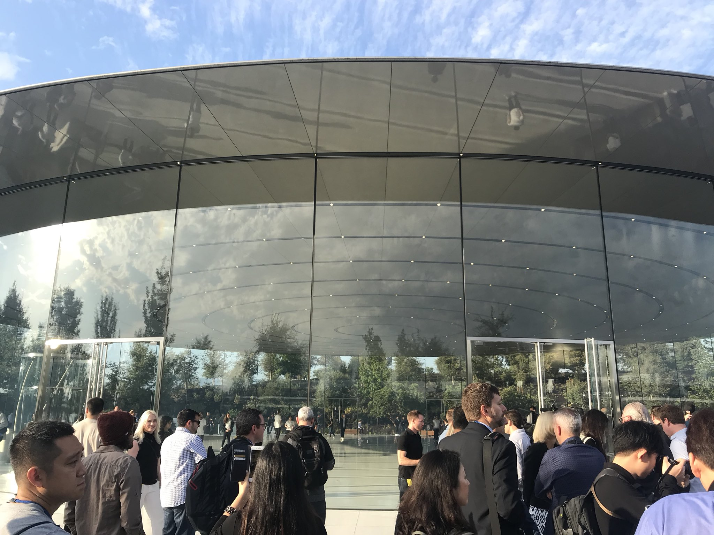

September 2017
iPUG website updated
Our iPUG website has been updated. It is faster all around, Links page is updated, the Help and Gadgets pages are new, and our older meetings page is easier to read. Our site is now hosted by Siteground. Please share it with friends and provide feedback on the changes, good or bad. :)
PSA
Hurricane relief: Apple has set up a page for donating to those affected my hurricanes Irma and Harvey. Easy donation via iTunes, and 100% of it goes to charities.
Equifax had a massive data breach: 143 Million Americans were affected, jeopardizing Social Security numbers, birthdates, addresses and driver’s licenses, as reported by Krebson Security. To avoid identity theft, consider freezing your credit reports.
Are you using AccuWeather app? If so, you should delete it and never install it again. AccuWeather was caught sending user location data, even when sharing was off . It went against user wishes and against Apple’s requirements. AccuWeather sent the user location data to a company that `monetizes’ the information. Consider other weather apps such as: Dark Sky.
AccuWeather responded about this scandal, and John Gruber writes about `Wading through AccuWeather's bullshit response'. Yes, it's pretty bad.
Uber has been tracking users’ location, even after they stop using the app. Now, Uber says it will stop its controversial tracking after the user stops using the app. On the other hand, Lyft offers excellent service, has better business practices, and has not been tracking users beyond their desires.
Before Apple’s Keynote
The Apple mothership, photographed at 8:30 this morning by Jim Dalrymple:

Various journalists tweeting photos and videos before the event this morning:
Inside a Jony Ive garage. pic.twitter.com/P1AWlgH148
— Neil Cybart (@neilcybart) September 12, 2017
Looking inside Steve Jobs Theater, the scale is woah. Feels and looks like some kind of Egyptian or Space structure. pic.twitter.com/6ol5MT2u8A
— Neil Cybart (@neilcybart) September 12, 2017
The Spaceship landing. pic.twitter.com/HzqYx1mU9I
— Neil Cybart (@neilcybart) September 12, 2017
Very scenic. (And I just got kicked out of this space/path). pic.twitter.com/CBugX6Zpfx
— Neil Cybart (@neilcybart) September 12, 2017
We have the answer as to how one passes exhibit space in SJ Theater w/o seeing gadgets:
— Neil Cybart (@neilcybart) September 6, 2017
Retractable, circular wall (likely the dotted line) pic.twitter.com/q00blSGLah
The roof is held up just by glass. pic.twitter.com/GjVKZudBFP
— Neil Cybart (@neilcybart) September 12, 2017
You know you’re in Silicon Valley (and near Apple’s campus) when you see a DuckDuckGo billboard. pic.twitter.com/QazVmeRZgk
— Neil Cybart (@neilcybart) September 12, 2017
Jony is showing Marc Newson around. No one seems to be noticing them.
— Neil Cybart (@neilcybart) September 12, 2017
Jony and Marc Newson. pic.twitter.com/rg1tTkAz3i
— Neil Cybart (@neilcybart) September 12, 2017
Initial verdict of $14,000 seat: comfortable. pic.twitter.com/4rDNjPvPBI
— Neil Cybart (@neilcybart) September 12, 2017
This year even the press badges are recyclable. #appleevent https://t.co/89AHPsnlAf
— Rene Ritchie (@reneritchie) September 12, 2017
The elevator rotates. pic.twitter.com/XHCn4MTLC2
— Horace Dediu (@asymco) September 12, 2017
Here is the inside of the #SteveJobsTheater pic.twitter.com/nMGp4sFqqw
— carolina milanesi (@caro_milanesi) September 12, 2017
Apple Keynote summary
It started with a beautiful video titled `Dear Apple’ showcasing actual people who wrote letters to Apple:
Press release: Apple TV 4K. Order both Apple TV 4K models beginning Friday, September 15, with availability beginning Friday, September 22.
Press release: Apple Watch Series 3. Pre-order Sept 15, available in stores starting Friday, September 22.
Press release: iPhone 8 and 8 Plus. Available for pre-order beginning Friday, September 15 in more than 25 countries and territories, and in stores beginning Friday, September 22.
... And one more thing: Press release, iPhone X [ pronounced `iPhone TEN’ ]. Available for pre-order beginning Friday, October 27 in more than 55 countries and territories, and in stores beginning Friday, November 3.
Also, iOS 11 and watchOS 4 will be available for download on Sept 22.
Apple Keynote details
Here is the whole event at just under 2 hours: Apple Keynote, Sept 2017. You can also watch on Apple TV. Worth watching this, even in portions.
The keynote started with a heartfelt tribute to Steve Jobs: Audio of Steve Jobs, followed by Tim Cook making remarks about him and about Apple: `we dedicate this theater to Steve because we loved him and because he loved events like this. To inspire the next generation of creators and innovators... Steve’s vision lives here at Apple Park and everywhere at Apple. Today and always, we honor him.’
Tim Cook also mentioned the new Visitor Center at Apple Park. Open to all. Has an AR area to play with new tech.
Watch has 97% customer satisfaction. Best selling smartwatch.
watchOS 4: Smart activity coaching, gym kit enables sync with machines at gym, notification of high heart rate if it happens when you are not active, arrhythmia detection. Apple Heart Study will use data from Watch to analyze arrhythmia, atrial fibrillation detection, in collaboration with Stanford Medicine and FDA. Later this year, download from the app store.
The new Apple Watch Series 3 was introduced. Same num as your iPhone, will stream music. 40M songs on your wrist. Barometric altimeter tells you flights of stairs you climbed, etc.
Selling Series 1 (old), Series 3 WiFi, Series 3, Cellular.
See the Interactive watch and band gallery. Beautiful way to decide what combination appeals to you.
New Apple TV 4K HDR. two models offered.
New iPhone 8 and 8 Plus.
new iPhone X ( pronounced iPhone TEN):
The new iPhone X is `the future' says Apple. Has 2 more hours of battery life compared to iPhone 7. Face ID uses a `TrueDepth camera system made up of a dot projector, infrared camera and flood illuminator.’
Face ID unlocks iPhone X only when you look at it and is designed to prevent spoofing by photos or masks. Apple went as far as to work with Hollywood to create masks to make sure that Face ID cannot be fooled.
Animoji is funny and will probably be used a lot. Fantastic technology behind it.
All new iPhones have True Tone screens.
See some photos from Jason Snell at the Keynote.
Jony Ive intro to iPhone X:
Intro to iPhone 8:
other iOS and Apple news
In its first 10 years, Apple sold at least 1.2 Billion iphones, making it the most successful product of all time, reports Asymco. Total revenue: close to a Trillion US Dollars (980 Billion).
The new Steve Jobs Theater includes rotating elevators and a retractable wall hiding the demo area, reports Macrumors.com.
Apple has improved Siri’s voice in iOS 11 using deep learning to make it closer to human intonations, as described in a paper by Apple. Look at the bottom of this paper to hear samples comparing iOS 9, 10, and 11.
Google is paying Apple $3 Billion to remain the default search engine for iPhones and iPads, according to analyst Bernstein, reports CNBC. `The firm believes Google will pay Apple about $3 billion this year, up from $1 billion just three years ago. Court documents indicate that Google paid Apple $1B in 2014, and we estimate that total Google payments to Apple in FY 17 may approach $3B,’ Bernstein analyst A.M. Sacconaghi Jr. said. ‘Given that Google payments are nearly all profit for Apple, Google alone may account for 5% of Apple’s total operating profits this year, and may account for 25% of total company OP growth over the last two years. Apple's iOS devices contribute about 50 percent to Google's mobile search revenues.'
NYPD is replacing 36K obsolete smartphones with iPhones, reports NY Post.
Now the the iPod is no longer available from Apple, here is where you can buy an iPod Shuffle, writes Macworld.
Now that the iPod has been retired, the iPod successor is the Apple Watch, argues Macworld. You can load it with music (it has 8 GB of storage capacity after all), and use a bluetooth speaker or AirPods, and you are done.
Apple Store iOS App now supports Touch ID for authenticating payments with your Apple ID, reports Macrumors.com. Recall that the FASTEST way to order newly released products is always through the Apple Store app, and not through a web browser.
New drone video of Apple Campus from August shows that landscaping is progressing and offers closer look at Steve Jobs theater.
previews of iOS 11
iOS 11 releases Sept 22. Most devices can upgrade to iOS 11 see list here.
Apple has created a page on iOS 11 preview. Take a look at all their brief but educational videos. Here are some:
Apple has created a page on How to Do Even More with an iPad Pro and iOS 11.
Since Apple has made beta versions public, we are benefitting from many good previews of iOS 11, from testers who want to share. See some overviews and videos below.
A very quick overview of iOS 11 changes:
A nice and quick overview of changes with iOS 11 on iPad:
Learn more about iOS 11, some highlights by Macworld.
Also, iOS 11 is bringing a new feature: Do not Disturb While Driving:
A very nice demo and overview of new features coming with iOS 11, by 9to5Mac.com:
As we prepare for iOS 11, Gail pints us to a nice overview of iOS history, starting with the first release.
A look at the 10-year evolution of the iPhone, by Quartz.com.
ARKit
AR is Augmented Reality and ARKit in iOS 11 is Apple's framework for developers to incorporate AR in their applications.
AR in ModiFace offers real-time hair-coloring demo, reports 9to5mac.com. Take a look:
Or you can use Kabaqit to `see' menu choices at a restaurant:
Here is a measuring app using ARKit, reports 9to5mac. Take a look:
With ARKit, Apple glasses are `inevitable', argues tech analyst Neil Cybart. `It is no longer a question of if, but when, Apple will use AR to rethink glasses. '